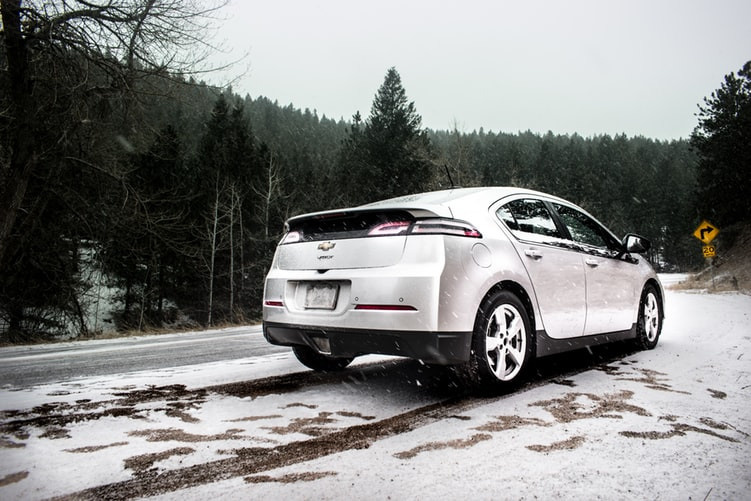
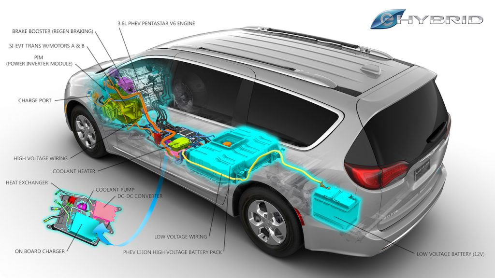

Plug-in hybrid electric vehicles–known as PHEVs–combine a gasoline or diesel engine
with an electric motor and a large rechargeable battery. Unlike conventional hybrids,
PHEVs can be plugged-in and recharged from an outlet, allowing them to drive extended
distances using just electricity. When the battery is emptied,
the conventional engine turns on and the vehicle operates as a conventional, non-plug-in
hybrid.
Because they can run on electricity from the grid—and because electricity is often a
cleaner energy source than gasoline or diesel—plug-in hybrids can produce significantly
less global warming pollution than their gas-only counterparts. They don't emit any
tailpipe pollution when driving on electricity, and they gain fuel efficiency benefits
from having an electric motor and battery. Since they use less gas, they also cost less
to fuel: driving a PHEV can save hundreds of dollars a year in gasoline and diesel costs.
To take advantage of plug-in hybrid vehicles, drivers need access to parking and a place
to plug-in, though a regular 120V outlet is usually sufficient. And since most PHEVs are
passenger cars, prospective buyers shouldn't regularly require space for more than five
occupants, and they shouldn't need to tow. For a list of PHEV vehicles, please click
HERE.

While not all models work the same way, most plug-ins can operate in at least two modes:
"all-electric," in which the motor and battery provide all of the car's energy; and
"hybrid," in which both electricity and gasoline are used. PHEVs typically startup in
all-electric mode, running on electricity until their battery pack is depleted: ranges
vary from 10 miles to over 40. Certain models switch to hybrid mode when they reach
highway cruising speed, generally above 60 or 70 miles per hour.
The electric motor and battery help PHEVs use less fuel and produce less pollution than
conventional cars, even when in hybrid mode. Idle-off turns off the engine while idling
at stoplights or in traffic, saving fuel. Regenerative braking converts some of the energy
lost during braking into usable electricity, stored in the batteries. And because the electric
motor supplements the engine's power, smaller engines can be used, increasing the car's fuel
efficiency without compromising performance.